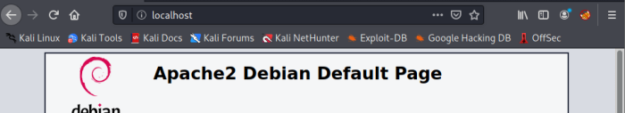
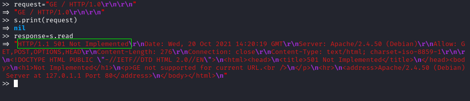

TCP Socket to interact with a Web Server
Usually using a socket is not a good solution because we lose a lot of time to build the packet to send to the server.
But
can be useful to test the behavior of a server when it receives incorrect packets. Poorly designed web servers may be vulnerable to DOS attack sending malformed HTTP packets.
1. start the server on the localhost
service apache2 start
service apache2 status
2. Check if it is working
type localhost or 127.0.0.1 in a web browser
3. Use Ruby to interact with our local webserver
require 'socket'
s=TCPSocket.new("localhost",80)
#path is “/” (we want a response from http://localhost/).
# send the request without any additional request header
request="GET / HTTP/1.0\r\n\r\n"
s.print(request)
response=s.read
http response containing headers and body (separated by
\r\n\r\n )
4. We can also split headers and body to analyze them separately.
headers,body = response.split("\r\n\r\n")Send a misconfigured request
This strategy may be useful to detect if the server is vulnerable to misconfigured packet attacks.
Note that now the verb is
GE 